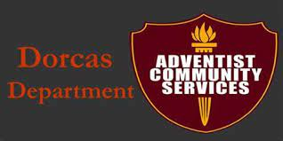

Dorcas was started by a group of women in Battle Creek, Michigan, USA, in1874 in the home of Mrs. Henry Gardner. It was first called Dorcas and Benevolent Association; eight women were charter members and Martha Byington Amadon, daughter of the first General Conference president, John Byington, was the first president. Activities included making garments and supplying food for needy families, caring for the fatherless and widows, and ministering to the sick. When the Home Missionary Department (now Sabbath School and Personal Ministries) was organized in 1913, the Dorcas Society work came under that department's leadership.
The "objective of the Dorcas Society is to help people physically and spiritually, in the name and spirit of Jesus. Its concern is for every case of need, irrespective of creed, class, nationality, or ethnic origin. The society attempts to meet emergency needs not provided by other agencies. The repair and distribution of good clothing is a specialty; surplus supplies are shipped abroad through ADRA." (Information from the Seventh-day Adventist Encyclopedia, Second revised edition, A-L, 1996, pages 473, 474.
In many places, and at various times, Dorcas has become known now as Adventist Community Services and men as well as women have become involved.